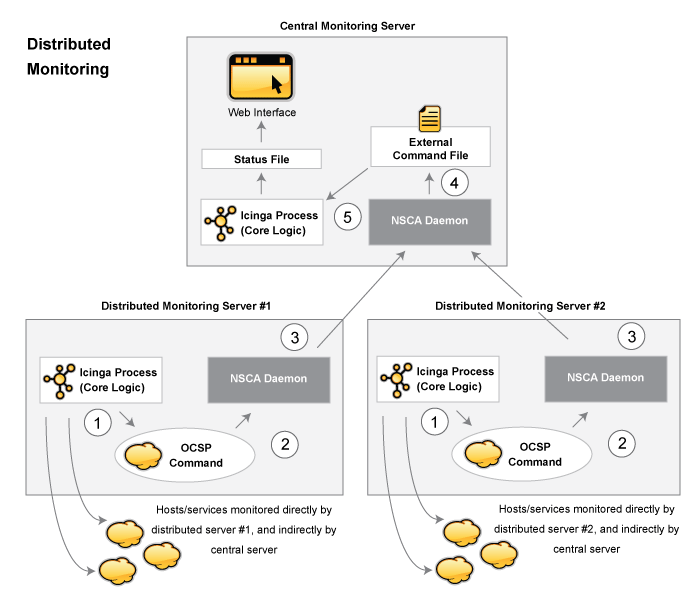

Icinga kann konfiguriert werden, so dass es verteilte Überwachung von Netzwerk-Services und Ressourcen unterstützt. Wir werden versuchen, kurz zu beschreiben, wie das erreicht werden kann...
Das Ziel der verteilten Überwachungsumgebung, das wir beschreiben wollen, ist die Reduzierung des Overheads (CPU-Belastung, etc.) bei der Service-Prüfung von einem "zentralen" Server auf ein oder mehrere "verteilte" Server. Die meisten kleinen bis mittleren Unternehmen werden keinen wirklichen Bedarf für das Aufsetzen solch einer Umgebung haben. Wenn Sie allerdings hunderte oder sogar tausende von Hosts (und ein Mehrfaches an Services) mit Icinga überwachen wollen, dann kann das ziemlich wichtig werden.
Das folgende Diagramm soll Ihnen eine generelle Idee davon geben, wie verteilte Überwachung mit Icinga arbeitet. Wir werden uns auf die Elemente im Diagramm beziehen, während wir die Dinge erklären...

Beim Einrichten einer verteilten Überwachungsumgebung mit Icinga gibt es Unterschiede in der Art, wie zentrale und verteilte Server konfiguriert sind. Wir werden Ihnen zeigen, wie beide Arten von Servern konfiguriert werden und erklären, welche Auswirkungen die gemachten Änderungen auf die gesamte Überwachung haben. Für den Anfang beschreiben wir den Zweck der verschiedenen Server-Typen...
Die Funktion eines verteilten Servers ist es, aktiv Prüfungen für alle Services durchzuführen, die Sie für eine "Gruppe" (Cluster) von Hosts definieren. Wir benutzen den Begriff "Gruppe" locker - er meint lediglich eine willkürliche Gruppe von Hosts in Ihrem Netzwerk. Abhängig von Ihrem Netzwerk-Layout können Sie mehrere Gruppen in einem physischen Standort haben oder jede Gruppe kann durch ein WAN voneinander getrennt sein, mit einer eigenen Firewall, usw. Wichtig anzumerken ist, dass es für jede Gruppe von Hosts (wie immer Sie diese definieren mögen) einen verteilten Server gibt, auf dem Icinga läuft, und der die Services der Hosts dieser Gruppe überwacht. Ein verteilter Server enthält meistens eine simple Installation von Icinga. Es muss kein Web-Interface installiert sein, keine Benachrichtigungen versenden, keine Eventhandler-Scripts ausführen, noch etwas anderes tun außer Service-Prüfungen ausführen, wenn Sie das nicht wollen. Detaillierte Informationen zur Konfiguration eines verteilten Services gibt es später...
Der Zweck des zentralen Servers ist es lediglich, auf Service-Prüfungsergebnisse von einem oder mehreren verteilten Servern zu horchen. Obwohl Services ab und zu aktiv durch den zentralen Server geprüft werden, werden diese aktiven Prüfungen nur unter schlimmen Umständen ausgeführt, also lassen Sie uns im Moment sagen, dass der zentrale Server lediglich passive Prüfungen annimmt. Da der zentrale Server Ergebnisse von passiven Service-Prüfungen von einem oder mehreren verteilten Servern erhält, dient er als Mittelpunkt der gesamten Überwachungslogik (d.h., er versendet Benachrichtigungen, startet Eventhandler-Scripts, legt den Zustand von Hosts fest, enthält das Web-Interface, usw.).
Bevor wir näher auf Konfigurationsdetails eingehen, müssen wir wissen, wie die Service-Prüfungsergebnisse von den verteilten Servern zum zentralen Server geschickt werden. Wir haben bereits erwähnt, wie man passive Prüfungsergebnisse an den gleichen Host schickt, auf dem Icinga läuft (wie in der Dokumentation zu passive Prüfungen beschrieben), aber wir haben keinerlei Informationen darüber gegeben, wie man passive Prüfergebnisse von anderen Hosts verschickt.
Um den Versand von passiven Prüfergebnissen an einen anderen Host zu erleichtern, haben wir das nsca-Addon geschrieben. Das Addon besteht aus zwei Teilen. Das erste ist ein Client-Programm (send_nsca), das auf einem entfernten Host läuft und benutzt wird, um die Service-Prüfergebnisse an einen anderen Server zu senden. Das zweite Teil ist der nsca-Daemon (nsca), der entweder als eigenständiger Daemon oder unter inetd läuft und auf Verbindungen von Client-Programmen horcht. Nach dem Empfang von Service-Prüfinformationen von einem Client wird der Daemon die Prüfinformationen an Icinga (auf dem zentralen Server) weiterleiten, indem ein PROCESS_SVC_CHECK_RESULT zusammen mit den Prüfergebnissen in das external command file eingefügt wird. Das nächste Mal, wenn Icinga auf externe Befehle prüft, wird es die passiven Prüfergebnisse finden, die von den verteilten Servern geschickt wurden und sie verarbeiten. Einfach, oder?
Also wie genau wird Icinga auf einem verteilten Server konfiguriert? Grundsätzlich ist es eine einfache Installation. Sie müssen weder ein Web-Interface installieren noch Benachrichtigungen versenden, weil dies alles vom zentralen Server aus erledigt wird.
Haupt-Konfigurationsanpassungen:
Nur die direkt durch den verteilten Server zu überwachenden Services werden in der Objekt-Konfigurationsdatei definiert.
![[Anmerkung]](../images/note.png) |
Anmerkung |
|---|---|
|
Obwohl "obsess_over_service" per Standard in der Objektdefinition aktiviert ist, kann es ggf. durch Templates deaktiviert sein, so dass Sie sicherstellen sollten, dass diese Direktive aktiviert ist, wie sie benötigt wird. |
Die enable_notifications-Direktive auf dem verteilten Server wird auf 0 gesetzt. Das verhindert das Versenden von Benachrichtigungen.
Die obsess over services-Direktive auf dem verteilten Server wird aktiviert.
Auf dem verteilten Server ist ein ocsp command definiert (wie unten beschrieben).
Damit alles zusammenkommt und ordentlich arbeitet, wollen wir, dass der verteilte Server die Ergebnisse aller Service-Prüfungen an Icinga meldet. Wir können Eventhandler benutzen, um Änderungen am Zustand eines Service mitzuteilen, aber das bringt's nicht. Um den verteilten Server zu zwingen, alle Prüfergebnisse zu melden, müssen Sie die obsess_over_services-Option in der Hauptkonfigurationsdatei aktivieren und ein ocsp_command bereitstellen, was nach jeder Service-Prüfung ausgeführt wird. Wir werden das ocsp-Kommando benutzen, um die Ergebnisse aller Service-Prüfungen an den zentralen Server zu senden und den send_nsca-Client sowie den nsca-Daemon benutzen (wie oben beschrieben), um die Übertragung zu erledigen.
Um dies zu erreichen, müssen Sie ein ocsp-Kommando wie folgt definieren:
Die Definition für den submit_check_result-Befehl sieht ungefähr so aus:
define command{
command_name submit_check_result
command_line /usr/local/icinga/libexec/eventhandlers/submit_check_result $HOSTNAME$ '$SERVICEDESC$' $SERVICESTATE$ '$SERVICEOUTPUT$'
}
Die submit_check_result Shell-Scripte sehen ungefähr so aus (ersetzen Sie central_server durch die IP-Adresse des zentralen Servers):
#!/bin/sh
# Arguments:
# $1 = host_name (Short name of host that the service is
# associated with)
# $2 = svc_description (Description of the service)
# $3 = state_string (A string representing the status of
# the given service - "OK", "WARNING", "CRITICAL"
# or "UNKNOWN")
# $4 = plugin_output (A text string that should be used
# as the plugin output for the service checks)
#
# Convert the state string to the corresponding return code
return_code=-1
case "$3" in
OK)
return_code=0
;;
WARNING)
return_code=1
;;
CRITICAL)
return_code=2
;;
UNKNOWN)
return_code=-1
;;
esac
# pipe the service check info into the send_nsca program, which
# in turn transmits the data to the nsca daemon on the central
# monitoring server
/bin/printf "%s\t%s\t%s\t%s\n" "$1" "$2" "$return_code" "$4" | /usr/local/icinga/bin/send_nsca -H central_server -c /usr/local/icinga/etc/send_nsca.cfg
Das Script oben geht davon aus, dass das send_nsca-Programm und die Konfigurationsdatei (send_nsca.cfg) in den Verzeichnissen /usr/local/icinga/bin/ und /usr/local/icinga/etc/ zu finden sind.
Das ist alles! Wir haben erfolgreich einen entfernten Host konfiguriert, auf dem Icinga als ein verteilter Überwachungs-Server läuft. Lassen Sie uns genau betrachten, was mit dem verteilten Server passiert und wie er Service-Prüfungsergebnisse an Icinga schickt (die unten skizzierten Schritte entsprechen den Zahlen im obigen Referenzdiagramm):
Nachdem der verteilte Server eine Service-Prüfung beendet hat, führt er den Befehl aus, den Sie mit der Variable ocsp_command definiert haben. In unserem Beispiel ist dies das /usr/local/icinga/libexec/eventhandlers/submit_check_result-Script. Beachten Sie, dass die Definition für den submit_check_result-Befehl vier Parameter für das Script übergibt: den Namen des Hosts, der mit dem Service verbunden ist, die Service-Beschreibung, den Rückgabewert der Service-Prüfung und die Plugin-Ausgabe der Service-Prüfung.
das submit_check_result-Script übergibt die Informationen der Service-Prüfung (Host-Name, Beschreibung, Rückgabewert und Ausgabe) an das send_nsca-Client-Programm.
das send_nsca-Programm überträgt die Informationen der Service-Prüfung an den nsca-Daemon auf dem zentralen Überwachungs-Server.
der nsca-Daemon auf dem zentralen Server nimmt die Informationen der Service-Prüfung und schreibt sie in das external command file, damit Icinga sie später dort aufsammeln kann.
der Icinga-Prozess auf dem zentralen Server liest das external command file und verarbeitet die passiven Service-Prüfungsergebnisse, die vom verteilten Überwachungs-Server stammen.
Wir haben betrachtet, wie verteilte Überwachungs-Server konfiguriert werden sollten, daher wenden wir uns nun dem zentralen Server zu. Für alle wichtigen Dinge wird der zentrale so konfiguriert wie ein einzelner Server. Dessen Setup ist wie folgt:
auf dem zentralen Server ist das Web-Interface installiert (optional, aber empfohlen)
auf dem zentralen Server ist die enable_notifications-Direktive auf 1 gesetzt. Das aktiviert Benachrichtungen (optional, aber empfohlen)
auf dem zentralen Server sind aktive Service-Prüfungen deaktiviert (optional, aber empfohlen - beachten Sie die folgenden Anmerkungen)
auf dem zentralen Server sind external command checks aktiviert (erforderlich)
auf dem zentralen Server sind passive Service-Prüfungen aktiviert (erforderlich)
Es gibt drei andere sehr wichtige Dinge, die Sie beachten sollten, wenn Sie den zentralen Server konfigurieren:
Der zentrale Server muss Service-Definitionen für alle Services haben, die auf allen verteilten Servern überwacht werden. Icinga wird passive Prüfungsergebnisse ignorieren, wenn sie nicht zu einem Service passen, den Sie definiert haben.
Wenn Sie den zentralen Server nur benutzen, um Services zu verarbeiten, deren Ergebnisse von verteilten Hosts stammen, können Sie alle aktiven Service-Prüfungen auf programmweiter Basis durch das Setzen der execute_service_checks-Direktive auf 0 deaktivieren. Wenn Sie den zentralen Server nutzen, um selbst einige Services aktiv zu überwachen (ohne die Hilfe von verteilten Servern), dann sollten Sie die active_checks_enabled-Option der Service-Definitionen auf 0 setzen, die von den verteilten Servern überwacht werden. Das hindert Icinga daran, diese Services aktiv zu prüfen.
Es ist wichtig, dass Sie entweder alle Service-Prüfungen auf einer programmweiten Basis deaktivieren oder die enable_active_checks-Option in jeder Service-Definition deaktivieren, die von einem verteilten Server überwacht werden. Das stellt sicher, dass aktive Service-Prüfungen unter normalen Umständen niemals ausgeführt werden. Die Services werden weiterhin im normalen Prüfintervall geplant (3 Min., 5 Min., usw.), aber nicht ausgeführt. Wir werden bald erklären, warum das so ist...
Das war's! Einfach, oder?
Für alle wichtigen Dinge können wir sagen, dass sich der zentrale Server bei Überwachungen allein auf passive Prüfungen verlässt. Das Hauptproblem daran, sich komplett auf passive Prüfungen zu verlassen besteht darin, dass Icinga darauf vertrauen muss, dass jemand anders die Daten liefert. Was passiert, wenn der entfernte Host, der passive Prüfergebnisse sendet, herunterfährt oder unerreichbar wird? Wenn Icinga nicht aktiv die Services auf dem Host prüft, wie soll es wissen, wann es ein Problem gibt?
Glücklicherweise gibt es einen Weg, diese Art von Problemen zu behandeln...
Icinga unterstützt ein Feature, das eine "Frische"-Prüfung für die Ergebnisse von Service-Prüfungen durchführt. Mehr Informationen über Frische-Prüfung finden Sie hier. Dieses Feature sorgt für etwas Schutz gegen Situationen, in denen entfernte Hosts keine passiven Service-Prüfungen mehr an den zentralen Überwachungs-Server schicken. Der Zweck der "Frische"-Prüfung besteht darin, sicherzustellen, dass Service-Prüfungen entweder regelmäßig passiv durch verteilte Server oder aktiv durch den zentralen Server durchgeführt werden, falls dies notwendig sein sollte. Wenn die Service-Prüfergebnisse von verteilten Servern als "abgestanden" angesehen werden, kann Icinga so konfiguriert werden, um aktive Prüfungen des Service vom zentralen Überwachungs-Server aus zu erzwingen.
Wie machen Sie das? Auf dem zentralen Überwachungs-Server müssen Sie Services konfigurieren, die von verteilten Server wie folgt überwacht werden:
Die check_freshness-Option in der Service-Definition ist auf 1 zu setzen. Das aktiviert "Frische"-Prüfungen für den Service.
Die freshness_threshold-Option in den Service-Definitionen sollte auf einen Wert (in Sekunden) gesetzt werden, der widerspiegelt, wie "frisch" die (von den entfernten Servern gelieferten) Ergebnisse der Service-Prüfungen sein sollten.
Die check_command-Option in den Service-Definitionen sollte gültige Befehle enthalten, die genutzt werden können, um den Service aktiv vom zentralen Server aus zu prüfen.
Icinga prüft periodisch die "Frische" der Ergebnisse aller Services, für die Frische-Prüfungen aktiviert sind. Die freshness_threshold-Option in jeder Service-Definition wird benutzt, um festzulegen, wie "frisch" die Ergebnisse für jeden Service sein sollen. Wenn Sie z.B. diesen Wert für einen Ihrer Services auf 300 setzen, wird Icinga das Service-Ergebnis als "abgestanden" betrachten, wenn es älter als 5 Minuten (300 Sekunden) ist. Falls Sie keinen Wert für die freshness_threshold-Option angeben, wird Icinga automatisch einen "Frische"-Schwellwert berechnen, indem es die Werte der check_interval- oder der retry_interval-Option betrachtet (abhängig vom Statustyp, in dem sich der Service befindet). Wenn die Service-Ergebnisse als "abgestanden" angesehen werden, wird Icinga den Service-Prüf-Befehl ausführen, der in der check_command-Option der Service-Definition angegeben ist, und dadurch den Service aktiv prüfen.
Denken Sie daran, dass Sie eine check_command-Option in den Service-Definitionen angeben müssen, die genutzt werden kann, um den Status des Service aktiv vom zentralen Server aus zu prüfen. Unter normalen Umständen wird dieser Prüfbefehl niemals ausgeführt (weil aktive Prüfungen auf programmweiter Ebene bzw. für den einzelnen Service deaktiviert wurden). Wenn Frische-Prüfungen aktiviert sind, wird Icinga diesen Befehl ausführen, um den Zustand des Service aktiv zu prüfen, auch wenn aktive Prüfungen auf einer programmweiten Ebene oder Service-spezifischen Basis deaktiviert sind.
Falls Sie es nicht schaffen, Befehle zu definieren, um aktiv einen Service vom zentralen Überwachungs-Host aus zu prüfen (oder wenn es zu einer großen Qual wird), können Sie ganz einfach bei all Ihren Services in der check_command-Option ein Dummy-Script angeben, das einen kritischen Status zurückliefert. Hier ein Beispiel... Lassen Sie uns annehmen, Sie definieren einen Befehl namens 'service-is-stale' und benutzen den Befehlsnamen in der check_command-Option Ihrer Services. Hier nun, wie die Definition aussehen könnte...
define command{
command_name service-is-stale
command_line /usr/local/icinga/libexec/check_dummy 2 "CRITICAL: Service results are stale"
}
Wenn Icinga feststellt, dass das Service-Ergebnis abgestanden ist und das service-is-stale-Kommando aufruft, wird das /usr/local/icinga/libexec/check_dummy-Plugin ausgeführt und der Service geht in einen kritischen Zustand. Das wird wahrscheinlich dazu führen, dass Benachrichtigungen versandt werden, so dass Sie wissen, dass es ein Problem gibt.
An diesem Punkt wissen Sie, wie man Service-Ergebnisse von verteilten Servern auf passive Weise erhält. Das bedeutet, der zentrale Server nicht aktiv Service-Prüfungen ausführt. Aber was ist mit Host-Prüfungen? Sie müssen sie trotzdem erledigen, aber wie?
Nachdem Host-Prüfungen normalerweise einen kleinen Teil der Überwachungsaktivität verbrauchen (sie werden nur ausgeführt, wenn es dringend notwendig ist), raten wir dazu, dass Sie die Host-Prüfungen aktiv vom zentralen Server aus durchführen. Das bedeutet, dass Sie Host-Prüfungen auf dem zentralen Server genau wie auf den verteilten Servern definieren (und auf die gleiche Weise, wie Sie das in einer normalen, nicht-verteilten Umgebung tun würden).
Passive Host-Prüfungen sind verfügbar (lesen Sie hier), so dass Sie diese in Ihrer verteilten Umgebung nutzen können, allerdings gibt es dabei ein paar Probleme. Das größte Problem besteht darin, dass Icinga Ergebnisse von passiven Host-Prüfungen (die Problemzustände DOWN und UNREACHABLE) nicht übersetzt, wenn sie verarbeitet werden. Das bedeutet, falls Ihre Überwachungs-Server eine unterschiedliche Eltern-/Kind-Host-Struktur haben (und das werden sie, wenn Ihre Überwachungs-Server an unterschiedlichen Standorten stehen), wird der zentrale Überwachungs-Server eine ungenaue Sicht Ihrer Host-Zustände haben.
Falls Sie in Ihrer verteilten Überwachungs-Umgebung passive Host-Prüfungen an einen zentralen Server senden möchten, dann stellen Sie sicher:
dass auf dem zentralen Server passive Host-Prüfungen aktiviert sind (notwendig)
dass auf dem verteilten Server obsess over hosts aktiviert ist.
|
Anmerkung |
|---|---|
|
Obwohl "obsess_over_host" per Standard in der Objektdefinition aktiviert ist, kann es ggf. durch Templates deaktiviert sein, so dass Sie sicherstellen sollten, dass diese Direktive aktiviert ist, wie sie benötigt wird. |
dass auf dem verteilten Server ein ochp command definiert ist.
Der ochp-Befehl, der zur Verarbeitung von Host-Prüfergebnissen genutzt wird, arbeitet ähnlich wie der ocsp-Befehl, der für die Verarbeitung von Service-Prüfergebnissen benutzt wird (siehe oben). Um sicherzustellen, dass passive Host-Prüfergebnisse aktuell sind, sollten Sie Frische-Prüfungen für Hosts aktivieren (ähnlich zu dem, was weiter oben für Services beschrieben wird).
© 1999-2009 Ethan Galstad, 2009-2017 Icinga Development Team, https://www.icinga.com